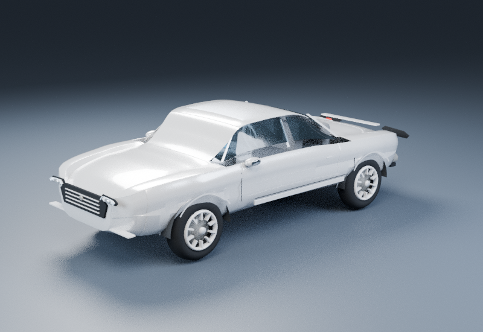

Front three-quarterIntermediate render · current Blender scene
Studio views
Select a frame · click the large image to expand · use ← → keysTrue Blender Cycles output · PNGDownload Blender scene
WIP exterior and cockpit study · geometry and glazing refinement
